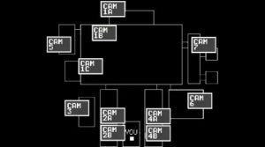
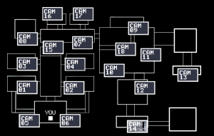
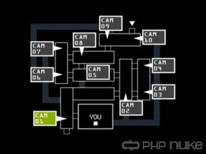
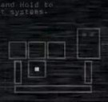

If you see any issues, please do make us aware via our Contact Form.
Thank you for browsing FNaFLore.com, we hope you enjoy the improvements that are coming to the site!
")

Who is Michael Afton? (MikeBully vs MikeVictim)
Ever since MatPat said in his Game Theory controversially that Mike is BV, Freddit went into uproar. Before there was a clear majority of MikeBully theorists but MatPat has unleashed a new wave of theories entertaining the idea of MikeVictim. With this theory, I will prove that Michael Afton is in fact, the Bite Victim. Let’s start at FNaF 4.
The minigames feature a child who is the only one afraid of the animatronics. He also bullied by his older brother who wears a Foxy mask. He locks him in his room and jumpscares him. The sound of the jumpscare in the minigames is exactly like the jumpscare from the actual gameplay. Also in the minigames, the ambience from the gameplay is carried over into the minigames. That’s two connections but it doesn’t stop there. The minigames play parallel with the gameplay. When BV gets bitten by Fredbear, that night is when Fredbear appears. And then when he dies, Nightmare appears. And the infamous Scott comment seems to confirm this. Many Mike=Foxy Bro theorists use this as proof that MikeVictim has been debunked. Scott said that MatPat missed a crucial detail in his first FNaF 4 theory and he should listen to his fans. And yes, there is a lot of comments saying Foxy Bro is the player but there is more saying the gameplay is BEFORE the Bite. Now remember, ONLY BV was afraid of the animatronics and their literal name is “Nightmare” animatronics. Also, very rarely, the bedside table turns into flowers and an IV. We know from the heart failure tone that BV was in a hospital at some point after the Bite and was alive. The initial blow did not kill him.
In Sister Location, we get a very important clue as to what exactly the FNaF 4 gameplay was about. In the breaker room, there is a map outlining to where the power needs to be restored to. On the map, there is the normal SL layout but there is also the map of the FNaF 4 gameplay and minigame houses. Not only that, there are dots on the map which show where the Funtimes are located. Well, there are four dots in the main gameplay house, and five in the Plushtrap house. The four in the gameplay house are Freddy, Bonnie, Chica and Foxy. While yes, Nightmare Fredbear is canon and does appear, I believe that he is just created from the imagination of the FNaF 4 player. The UCN voice lines support this. “I assure you, I am very real” and “This time, there is more than an illusion to fear”. Nowhere does any of the Nightmares mention guilt of killing your brother (“The one you should not have killed” is being Foxy Bro killing BV is a theory about UCN but that refers to why the player is being tortured, not about how the Nightmares were originally created), just purely fear. This is also the same with Nightmare. He is a scarier version of the same thing after BV dies.
Also, there is another type of dot. Solid white squares. The same used to describe the player in FNaF 1

The player in FNaF 2

And the player in FNaF 3

The solid square is used to show where the protagonist (“YOU”) are. Now here is where the pieces come together.
You are the FNaF 4 protagonist.
You are the player of Fun with Plushtrap.
You are the Bite Victim!

Now, the squares were only ever used to show where you are. On the map, there is not solid white square to show where the maintenance workers are, nor is there a solid white square for where you work (in the control room between Ballora and Funtime Foxy), so the squares are not for workers, only for one purpose. Watching Michael Afton. Now, it could be for watching the Afton children and Foxy Bro is the person in the gameplay house but the big problem with that is, he simply is not afraid of the Nightmares at the time of the Bite of 83. So, he can’t be the player at this time that the map implies. This is further backed up by the “1983” number pad in the secret room. It has cameras on the gameplay bed, the closet and Fun with Plushtrap which all occured in 1983. Remember the name of the animatronics. Nightmare Animatronics. The FNaF 4 player is scared of these monsters and only BV was afraid of them in 1983. Now, people could say that this was made after the Bite of 83 to punish Foxy Bro BUT we see Fredplush in the secret room sitting right next to the screens displaying the camera footage. I think this is showing that the FNaF 4 player is BV. He has his friends and gets bullied by Foxy Bro at day, and gets tormented at night by these monsters, worsening his fear of the animatronics. Now, the question is: Why is William Afton putting his son through all this? The answer lies in FFPS and UCN.
In FFPS, there is the infamous minigame, Midnight Motorist. It has puzzled many theorists but MatPat has actually given what I think is a good explanation. BV goes out every night to a Fazbear’s location and William punishes him for doing so which leads to Fredplush, the cameras and the Nightmare animatronics. Also, the TV guy is Foxy Bro. His explanation is actually backed up with what I am calling Midnight Motorist 2: The Bear of Revenge. In the anime, Freddy always tries to kill Foxy but Foxy is always one step ahead and punishes Freddy with chores basically. Make Foxy breakfast, do the washing etc. Well, this is what I think the anime represents. BV (Freddy) runs off to a Fazbear location but William (Foxy) is not happy. He always finds a way to punish and humiliate BV everytime he comes back from “giving him a new friend” (Fredplush) to doing household chores. Then William decides to go and leave Foxy Bro (Mangle) in charge. BV then says that he is going to find William, which parallels Michael Afton’s speech in Sister Location. “I am going to come find you”.
Now, to finish off, there is a line of lore Scott gave in the GTLive stream. “What is seen in the shadows can be misinterpreted as a child” (This line, like all the other lines, was replying to something but what he was replying may forever be unknown). BV saw something in the shadows that his father may have had something to do with. It twisted his vision of his friends and from there, spawned nightmares, which indirectly caused his death. But the fact is, he survived. At the time of the logbook, he was having dreams of Nightmare Fredbear. And Michael Afton can’t have had Golden Freddy send him the memories because Michael Afton wouldn’t have slept at a Fazbear location. Nightmare Fredbear is his own memory. The pieces of Michaels origin are coming together. He was curious child eager to see his friends but his father did not want him to witness him murdering children so he created a torture room to stump his curiosity. But in the end, good prevailed and Michael Afton along with Henry stopped William once and for all.
And that is why I think Michael Afton is the Bite Victim of 83.
P.S The major problem with MikeVictim is finding a reason for how BV could have survived. I understand that until a reason is found, MikeVictim will always be hard to accept but I will give this. How did William Afton get out of the SpringBonnie suit after FNaF 3? The big problem is that William has naturally possessed his suit. He can’t use remnants as remnants is residue of a soul. He would have to take a sample of himself, and inject it into the body of a person who is already inside the ScrapTrap suit. And William Afton is definitely in the ScrapTrap suit. Also, what about Michael Afton surviving the scoop? He dies during the scooping and when Ennard leaves his body, he somehow comes back again. People say it is self possession but that doesn’t really make sense. We see in the Security Puppet minigame, Charlie was already dead by the time the Security Puppet and once the connection did happen, then she possessed the animatronic.
Freelance theorist